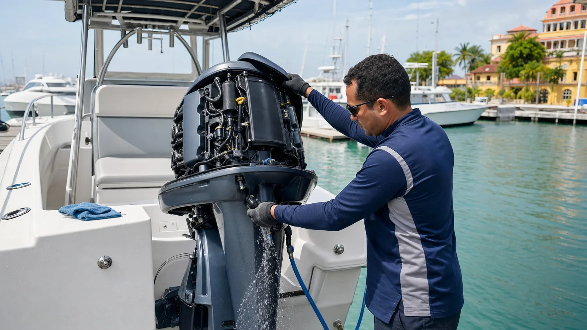

El calor, la humedad y la sal del Caribe aceleran los depósitos y la corrosión. El mantenimiento correcto no consiste únicamente en cambiar aceite: incluye refrigeración, combustible, batería, hélice, ánodos, lubricación y una inspección visual que permita comparar el estado del motor de una salida a la siguiente.
Qué hacer después de navegar en agua salada
- Enjuaga el exterior. Retira sal de la carcasa, soporte, trim, dirección y zona de la hélice con agua dulce.
- Lava el circuito de refrigeración. Usa la conexión y el procedimiento descritos para tu modelo. Mercury y Yamaha recomiendan el lavado después de operar en agua salada.
- Observa el chorro testigo. Debe ser estable según el diseño del motor. Una salida débil puede indicar obstrucción, pero no identifica por sí sola la causa.
- Revisa hélice y entradas de agua. Busca cabos, bolsas, golpes, sedal o material vegetal antes del siguiente uso.
- Deja registro. Anota horas, alarmas, consumo anormal, dificultad de arranque y cualquier cambio de sonido.
El mantenimiento por horas no es igual para todos
El calendario depende de marca, modelo, potencia, año, uso comercial o recreativo y condiciones de almacenamiento. El manual del propietario define aceite, filtros, bujías, lubricante de engranajes, impulsor, correas y procedimientos. Si desconoces el historial, conviene empezar con una línea base documentada en lugar de adivinar cuándo fue el último servicio.
Refrigeración
Revisa entradas de agua, bomba, impulsor, termostato, mangueras y depósitos. Yamaha aconseja inspeccionar anualmente la bomba e impulsor como regla general; el intervalo final debe confirmarse en el manual.
Combustible y aceite
Agua en el combustible, filtros saturados, gasolina envejecida o un nivel incorrecto de aceite pueden producir arranque difícil y funcionamiento irregular. No mezcles aceites o aditivos sin verificar compatibilidad.
Protección contra corrosión
Los ánodos deben permanecer limpios y sin pintura. Revisa puntos de tierra, tornillería, terminales y áreas donde quede agua atrapada. Pintar un ánodo impide que haga su trabajo.
Señales para detenerse y pedir diagnóstico
- Alarma de temperatura, aceite o sistema eléctrico.
- Pérdida repentina de potencia o dificultad para mantener revoluciones.
- Chorro de refrigeración ausente, intermitente o claramente diferente.
- Humo, olor a combustible, fuga de aceite o vibración nueva.
- Arranque lento aun con una batería verificada.
Una lectura electrónica de fallas, pruebas de presión o evaluación del combustible aportan más que cambiar piezas al azar. Detenerse a tiempo protege el motor y reduce el riesgo de quedar sin propulsión.
Preguntas frecuentes
¿Qué se hace después de usarlo en el mar?
Enjuague exterior, lavado del sistema de refrigeración según fabricante y revisión visual de sal, hélice, entradas de agua y fugas.
¿Cada cuánto se cambia el impulsor?
Depende del motor. Úsalo como componente de inspección programada y consulta el manual; no esperes a que aparezca sobrecalentamiento.
¿Se puede diagnosticar por WhatsApp?
Fotos, video de la alarma, modelo, horas y síntomas permiten orientar la visita, pero el diagnóstico final necesita revisar el motor.
¿Tu motor presenta una alarma o necesita mantenimiento?
Envíanos marca, modelo, potencia, horas, ubicación y síntomas para coordinar la inspección en Cartagena.
Solicitar diagnóstico